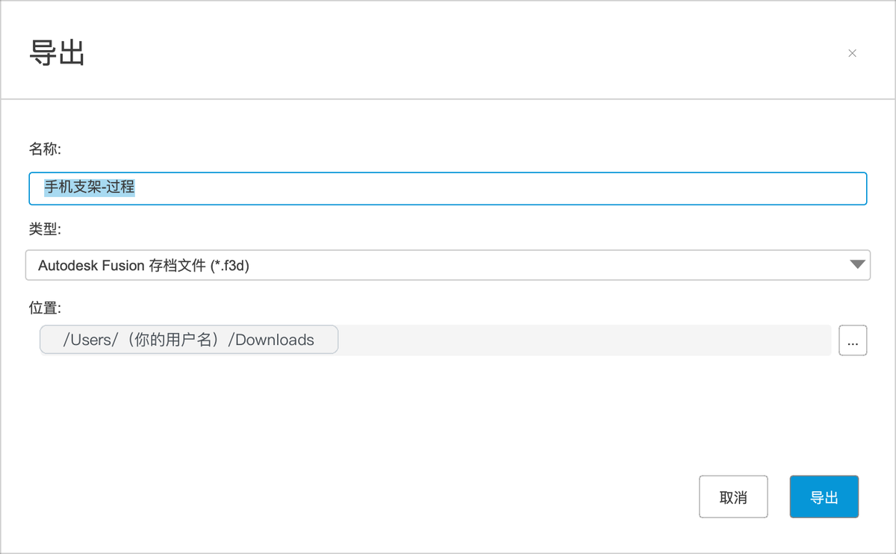
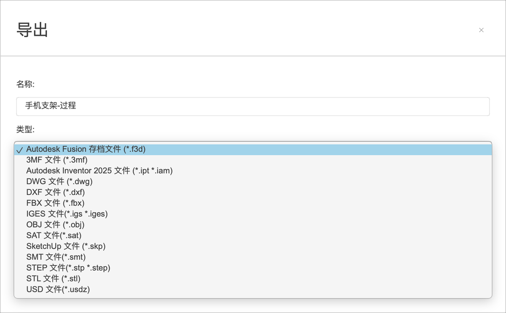
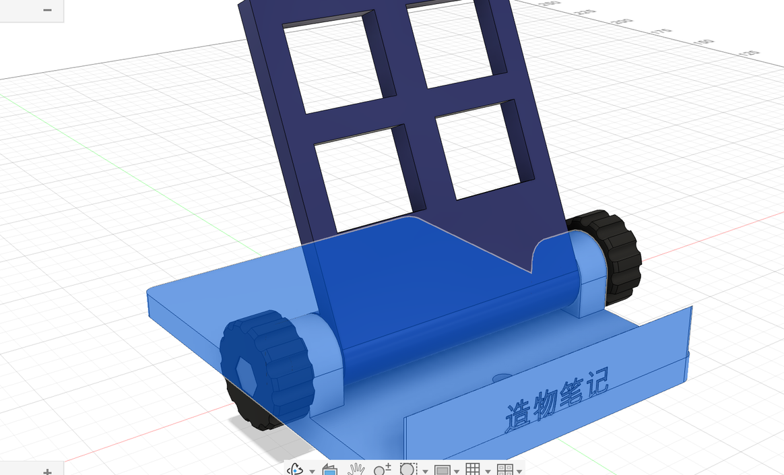
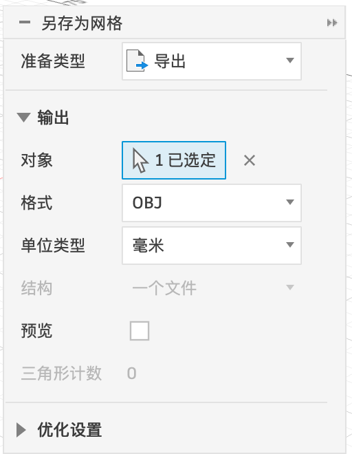

P10 导出
最后一步：把设计导出成文件。给自己备份用 F3D；给别人用其他软件打开用 STEP；拿去 3D 打印用 3MF 或 STL。
格式怎么选#
| 格式 | 是什么 | 什么时候用 |
|---|---|---|
| F3D | Fusion 的存档文件，包含全部历史、参数、联接 | 备份、发给也用 Fusion 的人 |
| STEP（.stp / .step） | 通用的三维格式，几乎所有 CAD 软件都能打开；保留精确的形状，但没有历史和参数 | 发给用 SolidWorks、Inventor 等其他软件的人，或者交给加工厂 |
| 3MF | 3D 打印用的新格式，带单位、颜色 | 3D 打印（推荐） |
| STL | 3D 打印用的老格式，只有一堆三角形，没有单位和颜色 | 3D 打印（所有切片软件都认） |
| OBJ / FBX / USD | 带外观的网格格式 | 给渲染、游戏、动画软件 |
| DWG / DXF | 二维图纸格式 | 工程图、激光切割（第 9、14 章） |
| IGES / SAT / SMT | 其他通用三维格式 | 对方软件要求时 |
导出 F3D / STEP#
- 「文件 ▾ → 导出」。
- 「名称」填文件名，「类型」下拉选格式，「位置」选保存到电脑的哪个文件夹（默认是“下载”），点「导出」。


导出 3D 打印文件：另存为网格#
3D 打印要每个零件分别导出（螺丝螺母是买的，不用导出）：
- 浏览器里右键底座的实体（或者右键「底座:1」）→「另存为网格」。
- 「格式」默认是 OBJ，改成 3MF 或 STL；「单位类型」保持毫米。
- 点「确定」，选保存位置。
- 靠背、旋钮同样各导出一份（旋钮导出一个，打印两个）。


另存为网格（实测字段）
| 选项 | 含义 | 建议 |
|---|---|---|
| 准备类型 | 导出到文件，或者准备发送到 3D 打印 | 导出 |
| 对象 | 要导出的实体或零部件 | 一个零件 |
| 格式 | 默认 OBJ，下拉可选 3MF、STL 等 | 改成 3MF 或 STL |
| 单位类型 | 文件里用什么单位 | 毫米 |
| 结构 | 选了多个对象时：合成一个文件，还是每个对象一个文件 | 一个文件 |
| 预览 / 三角形计数 | 勾选预览后，画布上显示网格的三角形，下面显示三角形数量 | 想看效果时勾选 |
| 优化设置（折叠） | 三角形的密度（细化程度） | 默认即可；圆形多的小零件调高 |
下载本案例的成品文件#
📦
手机支架.f3d
Fusion 存档，含全部步骤、参数和联接。首页「上载」导入。
🧊手机支架.step
通用三维格式。
🖨️底座.stl
3D 打印。
🖨️靠背.stl
3D 打印。
🖨️旋钮.stl
3D 打印，打两个。
打印提示#
| 零件 | 怎么摆在打印平台上 |
|---|---|
| 底座 | 底面朝下，原样摆放，不需要支撑 |
| 靠背 | 侧面（一个端面）朝下立起来打，圆筒和孔才圆；或者斜板背面朝下平放，圆筒下方需要支撑 |
| 旋钮 | 六角坑朝上，平面朝下，不需要支撑 |
层高、填充、支撑怎么设，见第 15 章「3D 打印全流程」。